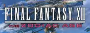
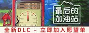
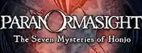

STEAM STORE DATA
价格与活动以商店页面为准
| # | 游戏 / GAME | 当前价格 | 折扣 | 已记录最低 | 玩家测评 | 购买区域限制 | 当前在线 | 商店链接 |
|---|---|---|---|---|---|---|---|---|
| 01 | ¥14.40 |
-95% | ¥ 14.40↘ 已记录史低 | 多半好评此游戏的 20826 篇用户评测中有 78% 为好评 | 国区可购区域说明商店未披露跨区激活或赠送限制，购买前请确认商品页。 |
—峰值 — | 商店 | |
| 02 | ¥22.00 |
-90% | ¥ 19.90 | 特别好评此游戏的 106107 篇用户评测中有 86% 为好评 | 国区可购区域说明商店未披露跨区激活或赠送限制，购买前请确认商品页。 |
22,094峰值 31,288 | 商店 | |
| 03 | 地铁：离乡APP / 412020 | ¥14.80 |
-90% | ¥14.80↘ 已记录史低 | 特别好评此游戏的 21411 篇用户评测中有 84% 为好评 | 国区可购区域说明商店未披露跨区激活或赠送限制，购买前请确认商品页。 |
—峰值 — | 商店 |
| 04 | ¥24.80 |
-90% | ¥24.80↘ 已记录史低 | 特别好评此游戏的 11824 篇用户评测中有 90% 为好评 | 国区可购区域说明商店未披露跨区激活或赠送限制，购买前请确认商品页。 |
—峰值 — | 商店 | |
| 05 | 极限国度APP / 2290180 | ¥16.80 |
-90% | ¥16.80↘ 已记录史低 | 多半好评此游戏的 15666 篇用户评测中有 78% 为好评 | 国区可购区域说明商店未披露跨区激活或赠送限制，购买前请确认商品页。 |
—峰值 — | 商店 |
| 06 | ¥3.49 |
-90% | ¥3.49↘ 已记录史低 | 特别好评此游戏的 5847 篇用户评测中有 81% 为好评 | 国区可购区域说明商店未披露跨区激活或赠送限制，购买前请确认商品页。 |
—峰值 — | 商店 | |
| 07 | ¥12.90 |
-85% | ¥12.90↘ 已记录史低 | 好评如潮此游戏的 4482 篇用户评测中有 95% 为好评 | 国区可购区域说明商店未披露跨区激活或赠送限制，购买前请确认商品页。 |
—峰值 — | 商店 | |
| 08 | ¥16.65 |
-85% | ¥16.65↘ 已记录史低 | 多半好评此游戏的 24268 篇用户评测中有 78% 为好评 | 国区可购区域说明商店未披露跨区激活或赠送限制，购买前请确认商品页。 |
—峰值 — | 商店 | |
| 09 | ¥44.70 |
-85% | ¥ 44.70↘ 已记录史低 | 多半好评此游戏的 35288 篇用户评测中有 79% 为好评 | 国区可购 · 有限制区域说明注意: Purchases made in this region will only receive the Russian and Simplified Chinese languages. |
—峰值 — | 商店 | |
| 10 | ¥35.64 |
-82% | ¥35.64↘ 已记录史低 | 特别好评此游戏的 11819 篇用户评测中有 84% 为好评 | 国区可购区域说明商店未披露跨区激活或赠送限制，购买前请确认商品页。 |
—峰值 — | 商店 | |
| 11 | ¥18.60 |
-80% | ¥ 15.60 | 特别好评此游戏的 22521 篇用户评测中有 89% 为好评 | 国区可购区域说明商店未披露跨区激活或赠送限制，购买前请确认商品页。 |
—峰值 — | 商店 | |
| 12 | ¥29.60 |
-80% | ¥ 29.60↘ 已记录史低 | 多半好评此游戏的 7122 篇用户评测中有 79% 为好评 | 国区可购区域说明商店未披露跨区激活或赠送限制，购买前请确认商品页。 |
—峰值 — | 商店 | |
| 13 | ¥41.60 |
-80% | ¥41.60↘ 已记录史低 | 多半好评此游戏的 22356 篇用户评测中有 72% 为好评 | 国区可购 · 有限制区域说明Purchases made in this region will only receive the Russian, simplified Chinese and English (Audio only) languages. |
—峰值 — | 商店 | |
| 14 | ¥40.00 |
-80% | ¥40.00↘ 已记录史低 | 多半好评此游戏的 7448 篇用户评测中有 71% 为好评 | 国区可购区域说明商店未披露跨区激活或赠送限制，购买前请确认商品页。 |
—峰值 — | 商店 | |
| 15 | ¥27.60 |
-80% | ¥27.60↘ 已记录史低 | 特别好评此游戏的 1851 篇用户评测中有 91% 为好评 | 国区可购区域说明商店未披露跨区激活或赠送限制，购买前请确认商品页。 |
—峰值 — | 商店 | |
| 16 | ¥54.60 |
-80% | ¥54.60↘ 已记录史低 | 特别好评此游戏的 618 篇用户评测中有 81% 为好评 | 国区可购区域说明商店未披露跨区激活或赠送限制，购买前请确认商品页。 |
—峰值 — | 商店 | |
| 17 | ¥39.60 |
-80% | ¥39.60↘ 已记录史低 | 好评如潮此游戏的 126577 篇用户评测中有 95% 为好评 | 国区可购区域说明商店未披露跨区激活或赠送限制，购买前请确认商品页。 |
—峰值 — | 商店 | |
| 18 | ¥39.60 |
-80% | ¥39.60↘ 已记录史低 | 特别好评此游戏的 1718 篇用户评测中有 89% 为好评 | 国区可购区域说明商店未披露跨区激活或赠送限制，购买前请确认商品页。 |
—峰值 — | 商店 | |
| 19 | ¥59.60 |
-80% | ¥59.60↘ 已记录史低 | 特别好评此游戏的 3995 篇用户评测中有 85% 为好评 | 国区可购区域说明商店未披露跨区激活或赠送限制，购买前请确认商品页。 |
—峰值 — | 商店 | |
| 20 | ¥45.80 |
-80% | ¥45.80↘ 已记录史低 | 特别好评此游戏的 1409 篇用户评测中有 91% 为好评 | 国区可购区域说明商店未披露跨区激活或赠送限制，购买前请确认商品页。 |
—峰值 — | 商店 | |
| 21 | ¥37.00 |
-75% | ¥ 28.00 | 特别好评此游戏的 9639 篇用户评测中有 90% 为好评 | 国区可购区域说明商店未披露跨区激活或赠送限制，购买前请确认商品页。 |
—峰值 — | 商店 | |
| 22 | ¥24.50 |
-75% | ¥ 24.50↘ 已记录史低 | 多半好评此游戏的 6261 篇用户评测中有 76% 为好评 | 国区可购区域说明商店未披露跨区激活或赠送限制，购买前请确认商品页。 |
—峰值 — | 商店 | |
| 23 | Euro Truck Simulator 2APP / 227300 | ¥23.24 |
-75% | ¥23.24↘ 已记录史低 | 好评如潮此游戏的 53076 篇用户评测中有 96% 为好评 | 国区可购区域说明商店未披露跨区激活或赠送限制，购买前请确认商品页。 |
57,125峰值 60,403 | 商店 |
| 24 | 神力科莎 Assetto CorsaAPP / 244210 | ¥19.00 |
-75% | ¥ 14.00 | 特别好评此游戏的 3936 篇用户评测中有 90% 为好评 | 国区可购区域说明商店未披露跨区激活或赠送限制，购买前请确认商品页。 |
—峰值 — | 商店 |
| 25 | ¥23.24 |
-75% | ¥23.24↘ 已记录史低 | 特别好评此游戏的 5386 篇用户评测中有 94% 为好评 | 国区可购区域说明商店未披露跨区激活或赠送限制，购买前请确认商品页。 |
—峰值 — | 商店 | |
| 26 | Call of Duty®: Infinite WarfareAPP / 292730 | ¥74.50 |
-75% | ¥74.50↘ 已记录史低 | 特别好评此游戏的 1961 篇用户评测中有 80% 为好评 | 国区可购区域说明商店未披露跨区激活或赠送限制，购买前请确认商品页。 |
—峰值 — | 商店 |
| 27 | ¥19.00 |
-75% | ¥ 17.00 | 特别好评此游戏的 6175 篇用户评测中有 92% 为好评 | 国区可购区域说明商店未披露跨区激活或赠送限制，购买前请确认商品页。 |
—峰值 — | 商店 | |
| 28 | ¥32.00 |
-75% | ¥32.00↘ 已记录史低 | 多半好评此游戏的 5581 篇用户评测中有 79% 为好评 | 国区可购区域说明商店未披露跨区激活或赠送限制，购买前请确认商品页。 |
—峰值 — | 商店 | |
| 29 | ¥67.00 |
-75% | ¥67.00↘ 已记录史低 | 特别好评此游戏的 13900 篇用户评测中有 91% 为好评 | 国区可购区域说明商店未披露跨区激活或赠送限制，购买前请确认商品页。 |
—峰值 — | 商店 | |
| 30 | ¥49.50 |
-75% | ¥49.50↘ 已记录史低 | 多半好评此游戏的 6563 篇用户评测中有 78% 为好评 | 国区可购区域说明商店未披露跨区激活或赠送限制，购买前请确认商品页。 |
—峰值 — | 商店 | |
| 31 | ¥49.50 |
-75% | ¥49.50↘ 已记录史低 | 特别好评此游戏的 428 篇用户评测中有 80% 为好评 | 国区可购区域说明商店未披露跨区激活或赠送限制，购买前请确认商品页。 |
—峰值 — | 商店 | |
| 32 | ¥27.00 |
-75% | ¥27.00↘ 已记录史低 | 特别好评此游戏的 2210 篇用户评测中有 80% 为好评 | 国区可购区域说明商店未披露跨区激活或赠送限制，购买前请确认商品页。 |
—峰值 — | 商店 | |
| 33 | ¥49.50 |
-75% | ¥49.50↘ 已记录史低 | 特别好评此游戏的 11926 篇用户评测中有 93% 为好评 | 国区可购区域说明商店未披露跨区激活或赠送限制，购买前请确认商品页。 |
—峰值 — | 商店 | |
| 34 | 审判之眼：死神的遗言 RemasteredAPP / 2058180 | ¥47.25 |
-75% | ¥47.25↘ 已记录史低 | 特别好评此游戏的 2048 篇用户评测中有 91% 为好评 | 国区可购区域说明商店未披露跨区激活或赠送限制，购买前请确认商品页。 |
—峰值 — | 商店 |
| 35 | ¥34.75 |
-75% | ¥34.75↘ 已记录史低 | 特别好评此游戏的 5651 篇用户评测中有 91% 为好评 | 国区可购区域说明商店未披露跨区激活或赠送限制，购买前请确认商品页。 |
—峰值 — | 商店 | |
| 36 | Call to Arms - Gates of Hell: LiberationAPP / 2447590 | ¥27.00 |
-75% | ¥27.00↘ 已记录史低 | 多半好评此游戏的 1101 篇用户评测中有 72% 为好评 | 国区可购区域说明商店未披露跨区激活或赠送限制，购买前请确认商品页。 |
—峰值 — | 商店 |
| 37 | ¥57.25 |
-75% | ¥57.25↘ 已记录史低 | 特别好评此游戏的 210 篇用户评测中有 93% 为好评 | 国区可购区域说明商店未披露跨区激活或赠送限制，购买前请确认商品页。 |
—峰值 — | 商店 | |
| 38 | ¥67.00 |
-75% | ¥67.00↘ 已记录史低 | 特别好评此游戏的 848 篇用户评测中有 81% 为好评 | 国区可购区域说明商店未披露跨区激活或赠送限制，购买前请确认商品页。 |
—峰值 — | 商店 | |
| 39 | Arizona Sunshine® VR 2APP / 1540210 | ¥35.88 |
-74% | ¥35.88↘ 已记录史低 | 特别好评此游戏的 229 篇用户评测中有 81% 为好评 | 国区可购区域说明商店未披露跨区激活或赠送限制，购买前请确认商品页。 |
—峰值 — | 商店 |
| 40 | Metro AwakeningAPP / 2669410 | ¥38.48 |
-74% | ¥38.48↘ 已记录史低 | 多半好评此游戏的 3118 篇用户评测中有 73% 为好评 | 国区可购区域说明商店未披露跨区激活或赠送限制，购买前请确认商品页。 |
—峰值 — | 商店 |
| 41 | 缺氧APP / 457140 | ¥17.40 |
-70% | ¥ 17.40↘ 已记录史低 | 好评如潮此游戏的 46630 篇用户评测中有 97% 为好评 | 国区可购区域说明商店未披露跨区激活或赠送限制，购买前请确认商品页。 |
—峰值 — | 商店 |
| 42 |  FINAL FANTASY XII THE ZODIAC AGEAPP / 595520 |
¥95.40 |
-70% | ¥95.40↘ 已记录史低 | 特别好评此游戏的 476 篇用户评测中有 81% 为好评 | 国区可购区域说明商店未披露跨区激活或赠送限制，购买前请确认商品页。 |
—峰值 — | 商店 |
| 43 | ¥69.00 |
-70% | ¥69.00↘ 已记录史低 | 特别好评此游戏的 12988 篇用户评测中有 81% 为好评 | 国区可购区域说明商店未披露跨区激活或赠送限制，购买前请确认商品页。 |
—峰值 — | 商店 | |
| 44 | ¥59.40 |
-70% | ¥59.40↘ 已记录史低 | 多半好评此游戏的 33854 篇用户评测中有 79% 为好评 | 国区可购区域说明商店未披露跨区激活或赠送限制，购买前请确认商品页。 |
—峰值 — | 商店 | |
| 45 | ¥32.40 |
-70% | ¥32.40↘ 已记录史低 | 好评如潮此游戏的 2704 篇用户评测中有 98% 为好评 | 国区可购区域说明商店未披露跨区激活或赠送限制，购买前请确认商品页。 |
—峰值 — | 商店 | |
| 46 | ¥59.40 |
-70% | ¥59.40↘ 已记录史低 | 特别好评此游戏的 4980 篇用户评测中有 84% 为好评 | 国区可购区域说明商店未披露跨区激活或赠送限制，购买前请确认商品页。 |
—峰值 — | 商店 | |
| 47 | ¥59.40 |
-70% | ¥59.40↘ 已记录史低 | 特别好评此游戏的 12863 篇用户评测中有 88% 为好评 | 国区可购区域说明商店未披露跨区激活或赠送限制，购买前请确认商品页。 |
24,774峰值 26,621 | 商店 | |
| 48 | STRANGER OF PARADISE FINAL FANTASY ORIGINAPP / 1358700 | ¥74.70 |
-70% | ¥74.70↘ 已记录史低 | 多半好评此游戏的 692 篇用户评测中有 76% 为好评 | 国区可购区域说明商店未披露跨区激活或赠送限制，购买前请确认商品页。 |
—峰值 — | 商店 |
| 49 | BRAVELY DEFAULT IIAPP / 1446650 | ¥113.70 |
-70% | ¥113.70↘ 已记录史低 | 特别好评此游戏的 1752 篇用户评测中有 80% 为好评 | 国区可购区域说明商店未披露跨区激活或赠送限制，购买前请确认商品页。 |
—峰值 — | 商店 |
| 50 | Tactics Ogre: RebornAPP / 1451090 | ¥89.40 |
-70% | ¥89.40↘ 已记录史低 | 多半好评此游戏的 520 篇用户评测中有 74% 为好评 | 国区可购区域说明商店未披露跨区激活或赠送限制，购买前请确认商品页。 |
—峰值 — | 商店 |
| 51 | 女神异闻录5皇家版APP / 1687950 | ¥80.40 |
-70% | ¥80.40↘ 已记录史低 | 好评如潮此游戏的 35270 篇用户评测中有 95% 为好评 | 国区可购区域说明商店未披露跨区激活或赠送限制，购买前请确认商品页。 |
—峰值 — | 商店 |
| 52 | ¥80.40 |
-70% | ¥80.40↘ 已记录史低 | 特别好评此游戏的 1972 篇用户评测中有 87% 为好评 | 国区可购区域说明商店未披露跨区激活或赠送限制，购买前请确认商品页。 |
—峰值 — | 商店 | |
| 53 | 波斯王子：RogueAPP / 2717880 | ¥24.00 |
-70% | ¥24.00↘ 已记录史低 | 多半好评此游戏的 300 篇用户评测中有 73% 为好评 | 国区可购区域说明商店未披露跨区激活或赠送限制，购买前请确认商品页。 |
—峰值 — | 商店 |
| 54 | RPG Maker MZAPP / 1096900 | ¥116.82 |
-68% | ¥ 116.05 | 特别好评此软件的 310 篇用户评测中有 83% 为好评 | 国区可购区域说明商店未披露跨区激活或赠送限制，购买前请确认商品页。 |
—峰值 — | 商店 |
| 55 | ¥113.85 |
-67% | ¥113.85↘ 已记录史低 | 特别好评此游戏的 5345 篇用户评测中有 86% 为好评 | 国区可购区域说明商店未披露跨区激活或赠送限制，购买前请确认商品页。 |
—峰值 — | 商店 | |
| 56 | ¥75.24 |
-67% | ¥75.24↘ 已记录史低 | 特别好评此游戏的 31835 篇用户评测中有 92% 为好评 | 国区可购区域说明商店未披露跨区激活或赠送限制，购买前请确认商品页。 |
15,155峰值 18,024 | 商店 | |
| 57 | Kingdom Rush Origins - Tower DefenseAPP / 816340 | ¥17.50 |
-65% | ¥17.50↘ 已记录史低 | 好评如潮此游戏的 4258 篇用户评测中有 95% 为好评 | 国区可购区域说明商店未披露跨区激活或赠送限制，购买前请确认商品页。 |
—峰值 — | 商店 |
| 58 | 人中之龙7 光与暗的去向 国际版APP / 1235140 | ¥38.15 |
-65% | ¥38.15↘ 已记录史低 | 特别好评此游戏的 5143 篇用户评测中有 90% 为好评 | 国区可购区域说明商店未披露跨区激活或赠送限制，购买前请确认商品页。 |
—峰值 — | 商店 |
| 59 | ¥69.30 |
-65% | ¥69.30↘ 已记录史低 | 特别好评此游戏的 1394 篇用户评测中有 83% 为好评 | 国区可购区域说明商店未披露跨区激活或赠送限制，购买前请确认商品页。 |
—峰值 — | 商店 | |
| 60 | ¥93.80 |
-65% | ¥93.80↘ 已记录史低 | 特别好评此游戏的 8352 篇用户评测中有 88% 为好评 | 国区可购区域说明商店未披露跨区激活或赠送限制，购买前请确认商品页。 |
—峰值 — | 商店 | |
| 61 | ¥109.60 |
-60% | ¥109.60↘ 已记录史低 | 特别好评此游戏的 29280 篇用户评测中有 82% 为好评 | 国区可购区域说明商店未披露跨区激活或赠送限制，购买前请确认商品页。 |
—峰值 — | 商店 | |
| 62 | ¥143.60 |
-60% | ¥ 143.60↘ 已记录史低 | 多半好评此游戏的 3921 篇用户评测中有 78% 为好评 | 国区可购区域说明商店未披露跨区激活或赠送限制，购买前请确认商品页。 |
—峰值 — | 商店 | |
| 63 | 仁王２ Complete EditionAPP / 1325200 | ¥99.60 |
-60% | ¥99.60↘ 已记录史低 | 特别好评此游戏的 16475 篇用户评测中有 85% 为好评 | 国区可购区域说明商店未披露跨区激活或赠送限制，购买前请确认商品页。 |
—峰值 — | 商店 |
| 64 | ¥95.20 |
-60% | ¥95.20↘ 已记录史低 | 特别好评此游戏的 7366 篇用户评测中有 82% 为好评 | 国区可购区域说明商店未披露跨区激活或赠送限制，购买前请确认商品页。 |
—峰值 — | 商店 | |
| 65 | ¥79.20 |
-60% | ¥79.20↘ 已记录史低 | 特别好评此游戏的 3093 篇用户评测中有 88% 为好评 | 国区可购区域说明商店未披露跨区激活或赠送限制，购买前请确认商品页。 |
—峰值 — | 商店 | |
| 66 | ¥138.00 |
-60% | ¥138.00↘ 已记录史低 | 特别好评此游戏的 2677 篇用户评测中有 85% 为好评 | 国区可购区域说明商店未披露跨区激活或赠送限制，购买前请确认商品页。 |
—峰值 — | 商店 | |
| 67 | TRIANGLE STRATEGYAPP / 1850510 | ¥151.60 |
-60% | ¥151.60↘ 已记录史低 | 多半好评此游戏的 720 篇用户评测中有 76% 为好评 | 国区可购区域说明商店未披露跨区激活或赠送限制，购买前请确认商品页。 |
—峰值 — | 商店 |
| 68 | ¥165.60 |
-60% | ¥165.60↘ 已记录史低 | 多半好评此游戏的 371 篇用户评测中有 78% 为好评 | 国区可购区域说明商店未披露跨区激活或赠送限制，购买前请确认商品页。 |
—峰值 — | 商店 | |
| 69 | 歧路旅人 IIAPP / 1971650 | ¥79.20 |
-60% | ¥79.20↘ 已记录史低 | 特别好评此游戏的 5260 篇用户评测中有 92% 为好评 | 国区可购区域说明商店未披露跨区激活或赠送限制，购买前请确认商品页。 |
—峰值 — | 商店 |
| 70 | ¥119.20 |
-60% | ¥119.20↘ 已记录史低 | 特别好评此游戏的 693 篇用户评测中有 88% 为好评 | 国区可购区域说明商店未披露跨区激活或赠送限制，购买前请确认商品页。 |
—峰值 — | 商店 | |
| 71 | 圣剑传说 Visions of ManaAPP / 2490990 | ¥139.20 |
-60% | ¥139.20↘ 已记录史低 | 多半好评此游戏的 2150 篇用户评测中有 76% 为好评 | 国区可购区域说明商店未披露跨区激活或赠送限制，购买前请确认商品页。 |
—峰值 — | 商店 |
| 72 | 人中之龙０ 誓约的场所 导演剪辑版APP / 2988580 | ¥95.20 |
-60% | ¥95.20↘ 已记录史低 | 特别好评此游戏的 1871 篇用户评测中有 82% 为好评 | 国区可购区域说明商店未披露跨区激活或赠送限制，购买前请确认商品页。 |
—峰值 — | 商店 |
| 73 | NINJA GAIDEN 2 BlackAPP / 3287520 | ¥119.20 |
-60% | ¥119.20↘ 已记录史低 | 多半好评此游戏的 992 篇用户评测中有 71% 为好评 | 国区可购区域说明商店未披露跨区激活或赠送限制，购买前请确认商品页。 |
—峰值 — | 商店 |
| 74 |  最后的加油站APP / 3690030 |
¥22.80 |
-60% | ¥22.80↘ 已记录史低 | 特别好评此游戏的 1557 篇用户评测中有 88% 为好评 | 国区可购区域说明商店未披露跨区激活或赠送限制，购买前请确认商品页。 |
—峰值 — | 商店 |
| 75 | ¥24.75 |
-55% | ¥ 20.64 | 特别好评此游戏的 7666 篇用户评测中有 94% 为好评 | 国区可购区域说明商店未披露跨区激活或赠送限制，购买前请确认商品页。 |
—峰值 — | 商店 | |
| 76 | Hi-Fi RUSHAPP / 1817230 | ¥56.25 |
-55% | ¥56.25↘ 已记录史低 | 好评如潮此游戏的 5334 篇用户评测中有 95% 为好评 | 国区可购区域说明商店未披露跨区激活或赠送限制，购买前请确认商品页。 |
—峰值 — | 商店 |
| 77 | ¥70.50 |
-50% | ¥ 35.00 | 特别好评此游戏的 2719 篇用户评测中有 80% 为好评 | 国区可购区域说明商店未披露跨区激活或赠送限制，购买前请确认商品页。 |
—峰值 — | 商店 | |
| 78 | Euro Truck Simulator 2 - ScandinaviaAPP / 304212 | ¥40.99 |
-50% | ¥ 29.40 | 特别好评此游戏的 223 篇用户评测中有 95% 为好评 | 国区可购区域说明商店未披露跨区激活或赠送限制，购买前请确认商品页。 |
—峰值 — | 商店 |
| 79 | ¥40.99 |
-50% | ¥ 29.40 | 特别好评此游戏的 1934 篇用户评测中有 91% 为好评 | 国区可购区域说明商店未披露跨区激活或赠送限制，购买前请确认商品页。 |
—峰值 — | 商店 | |
| 80 | ¥40.99 |
-50% | ¥ 29.40 | 特别好评此游戏的 1962 篇用户评测中有 93% 为好评 | 国区可购区域说明商店未披露跨区激活或赠送限制，购买前请确认商品页。 |
—峰值 — | 商店 | |
| 81 | CHRONO TRIGGER®APP / 613830 | ¥47.50 |
-50% | ¥ 47.50↘ 已记录史低 | 特别好评此游戏的 867 篇用户评测中有 88% 为好评 | 国区可购区域说明商店未披露跨区激活或赠送限制，购买前请确认商品页。 |
—峰值 — | 商店 |
| 82 | Grim Dawn - Ashes of Malmouth ExpansionAPP / 642280 | ¥34.50 |
-50% | ¥ 30.00 | 特别好评此游戏的 1475 篇用户评测中有 89% 为好评 | 国区可购区域说明商店未披露跨区激活或赠送限制，购买前请确认商品页。 |
—峰值 — | 商店 |
| 83 | Grim Dawn - Forgotten Gods ExpansionAPP / 897670 | ¥31.50 |
-50% | ¥31.50↘ 已记录史低 | 特别好评此游戏的 1105 篇用户评测中有 86% 为好评 | 国区可购区域说明商店未披露跨区激活或赠送限制，购买前请确认商品页。 |
—峰值 — | 商店 |
| 84 | ¥40.99 |
-50% | ¥ 18.00 | 特别好评此游戏的 2630 篇用户评测中有 90% 为好评 | 国区可购区域说明商店未披露跨区激活或赠送限制，购买前请确认商品页。 |
—峰值 — | 商店 | |
| 85 | ¥40.99 |
-50% | ¥ 29.40 | 特别好评此游戏的 3347 篇用户评测中有 86% 为好评 | 国区可购区域说明商店未披露跨区激活或赠送限制，购买前请确认商品页。 |
—峰值 — | 商店 | |
| 86 | 勇者斗恶龙 创世小玩家2 破坏神席德与空荡岛APP / 1072420 | ¥162.00 |
-50% | ¥ 162.00↘ 已记录史低 | 特别好评此游戏的 3212 篇用户评测中有 94% 为好评 | 国区可购区域说明商店未披露跨区激活或赠送限制，购买前请确认商品页。 |
—峰值 — | 商店 |
| 87 | ¥62.50 |
-50% | ¥62.50↘ 已记录史低 | 好评如潮此游戏的 9240 篇用户评测中有 95% 为好评 | 国区可购区域说明商店未披露跨区激活或赠送限制，购买前请确认商品页。 |
—峰值 — | 商店 | |
| 88 | Horizon Zero Dawn™ Complete EditionAPP / 1151640 | ¥172.50 |
-50% | ¥ 92.07 | 多半好评此游戏的 7838 篇用户评测中有 72% 为好评 | 国区可购区域说明商店未披露跨区激活或赠送限制，购买前请确认商品页。 |
—峰值 — | 商店 |
| 89 | ¥40.99 |
-50% | ¥40.99↘ 已记录史低 | 多半好评此游戏的 2296 篇用户评测中有 76% 为好评 | 国区可购区域说明商店未披露跨区激活或赠送限制，购买前请确认商品页。 |
—峰值 — | 商店 | |
| 90 | 勇者斗恶龙XI S 寻觅逝去的时光 - Definitive EditionAPP / 1295510 | ¥142.00 |
-50% | ¥142.00↘ 已记录史低 | 特别好评此游戏的 2432 篇用户评测中有 92% 为好评 | 国区可购区域说明商店未披露跨区激活或赠送限制，购买前请确认商品页。 |
—峰值 — | 商店 |
| 91 | Lies of PAPP / 1627720 | ¥149.00 |
-50% | ¥149.00↘ 已记录史低 | 特别好评此游戏的 8905 篇用户评测中有 83% 为好评 | 国区可购区域说明商店未披露跨区激活或赠送限制，购买前请确认商品页。 |
—峰值 — | 商店 |
| 92 | The Last of Us™ Part IAPP / 1888930 | ¥207.00 |
-50% | ¥207.00↘ 已记录史低 | 多半好评此游戏的 7716 篇用户评测中有 79% 为好评 | 国区可购区域说明商店未披露跨区激活或赠送限制，购买前请确认商品页。 |
—峰值 — | 商店 |
| 93 | ¥40.99 |
-50% | ¥40.99↘ 已记录史低 | 特别好评此游戏的 1788 篇用户评测中有 85% 为好评 | 国区可购区域说明商店未披露跨区激活或赠送限制，购买前请确认商品页。 |
—峰值 — | 商店 | |
| 94 | ¥99.00 |
-50% | ¥99.00↘ 已记录史低 | 好评如潮此游戏的 5023 篇用户评测中有 98% 为好评 | 国区可购区域说明商店未披露跨区激活或赠送限制，购买前请确认商品页。 |
—峰值 — | 商店 | |
| 95 |  灵视异闻 FILE23 本所七大不可思议APP / 2106840 |
¥64.50 |
-50% | ¥64.50↘ 已记录史低 | 好评如潮此游戏的 2805 篇用户评测中有 96% 为好评 | 国区可购区域说明商店未披露跨区激活或赠送限制，购买前请确认商品页。 |
—峰值 — | 商店 |
| 96 | ¥199.00 |
-50% | ¥199.00↘ 已记录史低 | 特别好评此游戏的 3712 篇用户评测中有 83% 为好评 | 国区可购区域说明商店未披露跨区激活或赠送限制，购买前请确认商品页。 |
—峰值 — | 商店 | |
| 97 | Ghost of Tsushima导演剪辑版APP / 2215430 | ¥199.00 |
-50% | ¥199.00↘ 已记录史低 | 特别好评此游戏的 4794 篇用户评测中有 87% 为好评 | 国区可购区域说明商店未披露跨区激活或赠送限制，购买前请确认商品页。 |
—峰值 — | 商店 |
| 98 | STAR OCEAN THE SECOND STORY RAPP / 2238900 | ¥99.00 |
-50% | ¥99.00↘ 已记录史低 | 特别好评此游戏的 381 篇用户评测中有 82% 为好评 | 国区可购区域说明商店未披露跨区激活或赠送限制，购买前请确认商品页。 |
—峰值 — | 商店 |
| 99 | ¥26.00 |
-50% | ¥26.00↘ 已记录史低 | 好评如潮此游戏的 6547 篇用户评测中有 96% 为好评 | 国区可购区域说明商店未披露跨区激活或赠送限制，购买前请确认商品页。 |
—峰值 — | 商店 | |
| 100 | 铁匠大师 Blacksmith MasterAPP / 2292800 | ¥29.50 |
-50% | ¥29.50↘ 已记录史低 | 特别好评此游戏的 2615 篇用户评测中有 83% 为好评 | 国区可购区域说明商店未披露跨区激活或赠送限制，购买前请确认商品页。 |
—峰值 — | 商店 |
没有找到匹配的游戏，试试其他关键词或折扣。